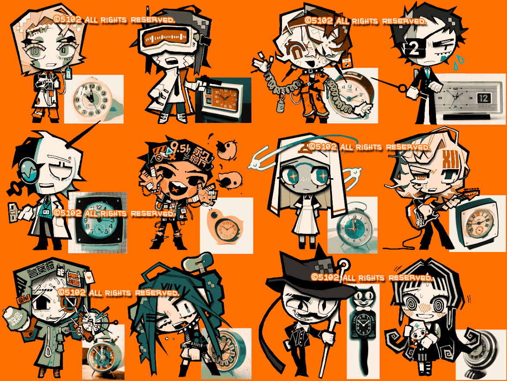

MagicalDrawというお絵かきチャットサイトの練習がてら1人で描いていたもの。
MagicalDrawはやり直しが1回まで+5秒以内という制限付き、しかもレイヤー2枚のみなので、手書きブログとはまた違った苦しみ、憎しみ、不便さを味わえる素晴らしいサイトだ。ドMお絵かきソフト。
ほぼ即興デザインで、時計からのキャラデザを徹底的にやっていた。もう既に「こういう人物」とキャラクター設定が決まっている奴もいればキャラデザのみで満足してしまった奴もいる。
元になった時計は2つを除き製造年代もモデル名も不明、もしくは信憑性が怪しいものばかりだ。
下段の黒猫の時計は「Kit-Cat」と呼ばれるアメリカの老舗ブランドで目が左右に動き尻尾が振り子になっている可愛らしい時計。もしかしたら何かの映画で見たことがある方もいるだろうか。
最近は全く時計を買っていません…。
2025/07/21
 時計からキャラデザするのは楽しいね（OC）
時計からキャラデザするのは楽しいね（OC）